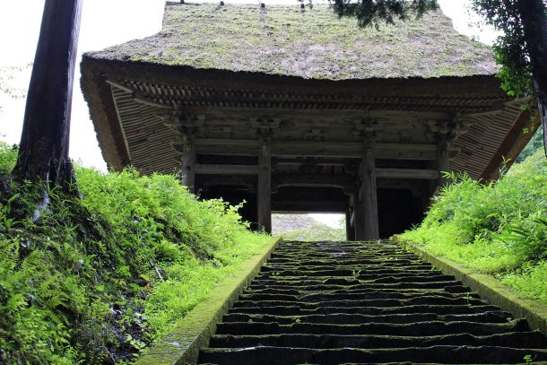
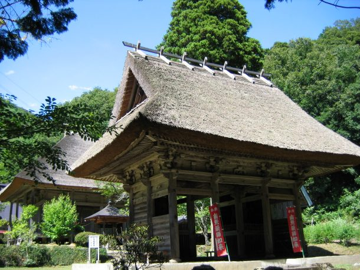
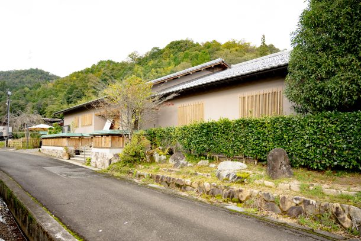
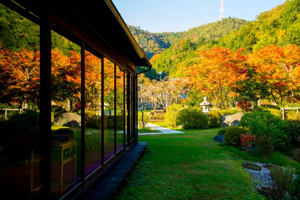
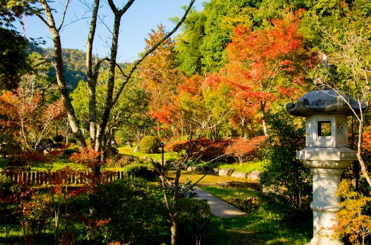
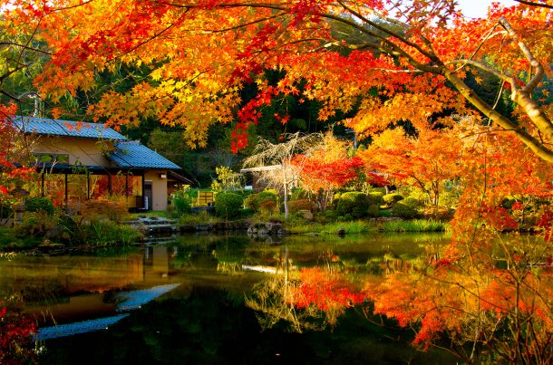

最新の情報は 公式サイトのツアーページ をご覧ください。
美しき秋を贅沢に愉しむ大人旅 ～綾部・茅葺き屋根と庭園を望む料亭ゆう月の雅なランチ～
※大人・子ども同額
※1名様からご予約いただけますが6名様以上で運行します。
※TOP写真はイメージです
| お申込み状況(最少催行人数6名) |
| 11/22 催行確定 11/28 催行確定 ※両日ともにまだお席ございます！ |
※最新のお申込み状況はお問い合わせください
昨年大好評につき、今年も開催。
少し贅沢に。
でも、その価値がある一日。
美しい紅葉と美食を愉しむ、大人の秋旅へ。
京の奥座敷・綾部を訪ね、茅葺き屋根の古刹・岩王寺、紅葉の名所・安国寺をめぐります。
昼食は、庭園を望む料亭「ゆう月」へ。
季節の花御膳を味わいながら、秋の美しい景色とともに、
ゆったりとしたひとときをお過ごしいただきます。
1日8名様限定だからこそ楽しめる、落ち着いた大人の旅。
昨年ご好評いただいた特別な秋旅を、今年もぜひお楽しみください。
| 本ツアーの見どころ |
| 【紫水ヶ丘公園】 高台から由良川を一望できる公園。秋にはもみじが斜面を真っ赤に染め上げます。 |
| 【岩王寺】 通常非公開の貴重な本堂を、住職さま自らご案内。 かやぶき屋根と紅葉が織りなす風景は、まるで時が止まったような静寂美。 |
| 【安國寺】 境内を彩る約100本の紅葉が一面を染め上げる圧巻の景色。茅葺きと紅葉の彩りが、訪れる人を魅了します。 |
| 【料亭ゆう月】 本ツアー最大の贅沢ポイント。庭園に面した唯一無二のお席をご用意。 窓一面に広がる紅葉を眺めながら、旬の食材を盛り込んだ「季節の花御膳」をゆったりとご堪能いただけます。 さらに、食後には庭へ降り立ち、秋の風景をお楽しみいただけます。 五感で味わう贅沢なひとときが、心に残る旅の記憶となること間違いなし！ |
行程
| 時間 | 場所 |
| 9:00 | 京都駅八条口MKタクシーのりば |
| 10:30 | 紫水ヶ丘公園 |
| 11:20 | 岩王寺 ※通常非公開 |
| 12:10 | 料亭ゆう月 |
| 14:10 | 安國寺 |
| ↓ | 道の駅 京丹波 味夢の里 |
| 16:40頃 | 京都駅 |
※渋滞等で、予定通りの滞在時間をお取りすることができない場合がございます。予めご了承ください。
※歩きやすい服装、履物でご参加ください。
◆気象状況により紅葉の見ごろは前後する場合があります。
岩王寺


写真提供：綾部市観光協会
料亭ゆう月
-

-





写真提供：料亭ゆう月
安國寺


写真提供：綾部市観光協会
【MKトラベルLINE公式アカウント】
MKトラベルの新規ツアー情報をLINEでお届けいたします

【各SNSでも京都の情報やツアー情報をお届けしています】


旅行条件
| ツアー番号 | T282MK |
| 出発地 | 京都市内 |
| 添乗員／ガイド | 添乗員：なし（乗務員がその業務を代行いたします） |
| 食事 | あり |
| 最少催行人数 | 6名（最大8名） |
お申込みについてのご注意
※最少催行人数は6名様です。最少催行人員に満たない場合は、旅行の実施を取りやめることがあります。出発の3日前にその旨をご連絡し、お客様から当社がお預かりしている旅行費用の全額をお返しいたします。
※旅行条件・旅行代金は、2026年9月1日現在を基準としています。
※行程および帰着時間は交通事情などにより変更になる場合があります。
※お申込みの前に弊社の募集型企画旅行規約をご確認ください。
よくある質問
Q.1名ですが、申し込みできますか？
A.はい。お一人参加の方もたくさんいらっしゃいますので、お気軽にお申し込みください。
Q.参加したかったけど、終了していました／日程が合いません
A.貸切で再現できる場合もございますのでご相談ください。お問合せフォームはこちら
＜お問合せフォームはこちら▶＞
＜MKトラベルTOPはこちら▶＞
＜おすすめツアー一覧はこちら▶＞
お支払い方法
【お電話・ご来店でのご予約の場合】
・クレジットカード決済
・コンビニ決済【WEBシステムよりご予約の場合】
・クレジットカード決済
・コンビニ決済
・ＴＡＣＰＯ
お支払方法詳細はこちら
お客様のご都合でご予約をキャンセルされる場合は、すみやかに下記お問合せ先までご連絡ください。
キャンセル料
11日目に当たる日以前
無料
10日目に当たる日以降
20%
7日目に当たる日以降
30%
旅行開始日の前日
40%
旅行開始日の当日
50%
旅行開始後又は無連絡
100%